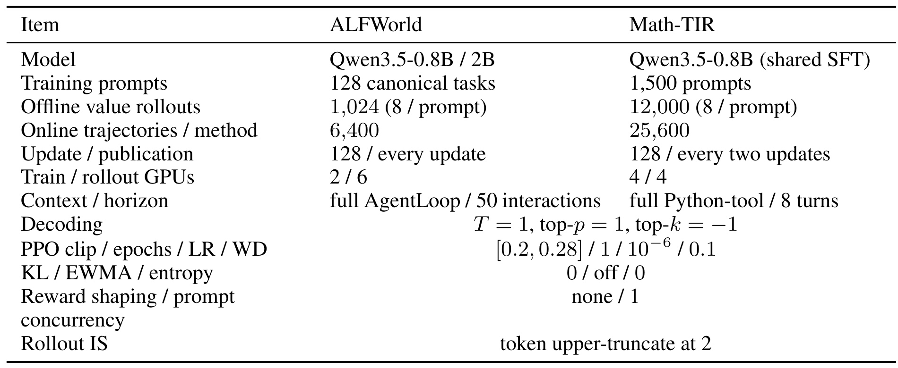
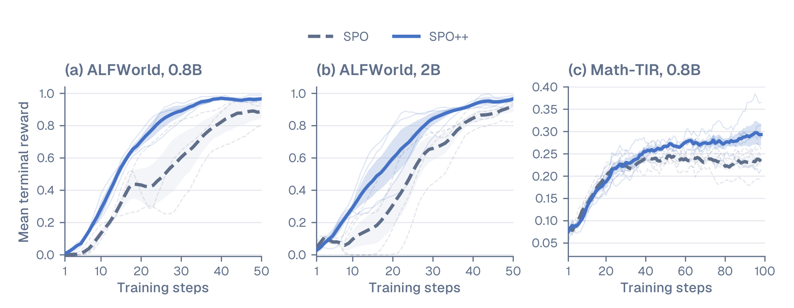
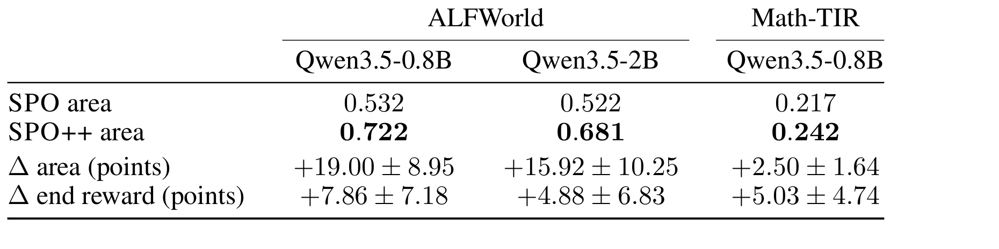
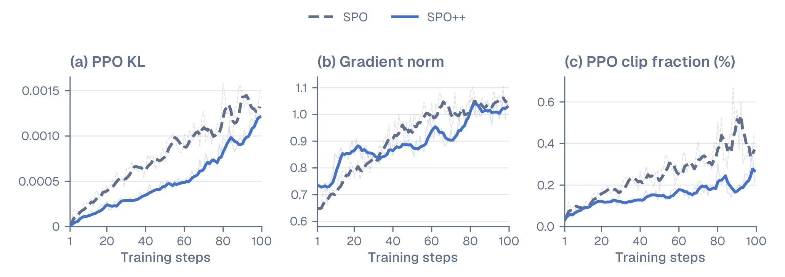
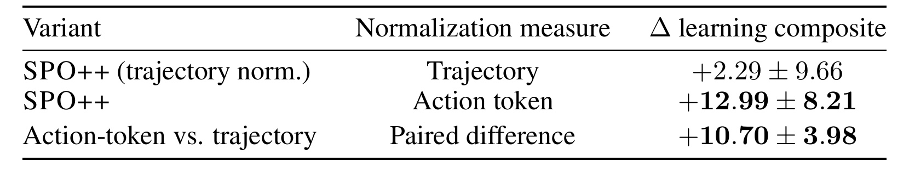

SPO++：面向异步智能体强化学习的流对齐策略优化
这篇论文讨论长轨迹 Agent 强化学习怎样摆脱“同一提示必须凑齐一组 rollout 才更新”的等待瓶颈。作者为 Kai Ruan、Jinghao Lin、Qianshan Wei、Ziqi Zhou 与 Zihe Huang；第一作者来自中国人民大学高瓴人工智能学院，合作机构包括独立研究者、中国科学院自动化研究所、杜克大学和中国科学院计算技术研究所。论文于 2026 年 8 月 25 日以 work in progress 形式公开，唯一论文入口为 arXiv:2608.24870。本轮没有核验到独立的官方代码仓库，因此复现判断以论文给出的算法与实验配置为限。
组相对强化学习在长而长度不一的工具轨迹上必须等待同组慢样本；SPO 虽把每个提示的一次在线轨迹解耦出来，却仍让基线受到回传先后影响，并用轨迹等权白化去服务 token 均值损失，因而优化器实际看到的加权优势通常不再以零为中心。
1. 背景和问题
1.1 从组内相对优势到单流更新
GRPO 一类方法不训练显式 critic，而是让同一提示产生多个回答，用组内奖励的相对位置构造优势。对纯文本短回答，这种做法的主要代价是一次要采多个样本；对 Agent 轨迹，代价还包含严重的尾部等待：有的任务两三次工具调用便终止，有的任务会经历几十轮观察、调用失败和重试，同组更新只能等待最慢的兄弟轨迹。同步屏障使 rollout worker 的空闲时间增加，也让快速完成的有效反馈迟迟不能进入 learner。SPO 的关键出发点是把“这一组样本的即时均值”换成“这个可重复任务身份的持久经验”：每次 actor 更新对一个提示只依赖一条在线轨迹，历史成功与失败证据则持续提供该提示的 baseline。它因此降低了依赖宽度，却把统计一致性的责任从组内样本转移给了跨时间维护的提示状态。
SPO++ 不是另起一套 dense reward 或 token-level critic。论文明确保留二元终局回报、每提示一次在线 rollout 和轨迹级信用粒度，只修正两处“坐标系没有对齐”的问题。第一处发生在异步系统时间轴上：轨迹由某个 actor 快照生成，却在不确定的未来时刻被 learner 收到；若按完成顺序递推提示状态，慢轨迹会因为系统调度而被当成“更新鲜”的证据。第二处发生在优化测度上：白化时每条轨迹权重相同，但 actor loss 对所有有效动作 token 取均值，长轨迹的那个标量优势会被复制更多次。轨迹均值为零，不等于 token 加权均值为零。
1.2 两种错位为何会相互放大
事件时间错位首先污染“和什么比较”。假设两个不同提示的请求都由旧策略生成，短请求先返回、长请求晚返回；按 receipt order 更新时，返回先后会改变持久证据的衰减路径。此时相同的一组结果仅因机器负载、工具延迟或网络抖动就可能给未来请求不同 baseline。SPO++ 要求请求在 dispatch 时读取并冻结 baseline，返回结果按生成它的 policy event 记账；只要未来 dispatch 能看见的历史集合相同，对接收排列便应不敏感。
测度错位则污染“以多大方向更新”。若成功轨迹通常比失败轨迹更长，成功优势会在 token-mean loss 中重复更多次；若失败轨迹更长，负优势又会获得更大权重。普通 trajectory whitening 只保证一批标量优势的等权和为零，无法抵消这种长度与优势的协方差。论文的 action-token measure 让均值、方差和最终 actor loss 使用同一套 token 权重，目标不是偏爱短轨迹或长轨迹，而是消除由两种聚合规则不一致造成的隐式偏置。
这项工作值得看的地方在于，它把算法公式与异步执行语义放在同一个分析框架里：baseline 要与“生成策略的时钟”对齐，advantage normalization 要与“actor 真正求平均的测度”对齐。对包含搜索、工具调用或多轮交互的推荐 Agent，这一视角尤其有用，因为请求耗时和响应长度常与任务难度、用户状态及结果质量相关。不过论文只在 ALFWorld 与 Math-TIR 上验证小规模 Qwen3.5 模型，尚未证明这种修正能直接转化为线上吞吐、GPU 小时节省或推荐业务指标提升。
还需要区分三个容易混在一起的量。轨迹完成时间决定 learner 何时能看到结果，生成策略版本决定结果属于哪一代行为分布，动作 token 数决定该结果在 actor loss 中被重复多少次。传统顺序 tracker 把前两者混在 receipt order 中，trajectory whitening 又忽略第三者；SPO++ 分别用 $z_i$ 和 $L_i$ 显式表示它们。这样拆开以后，问题不再是泛泛的“异步可能不稳定”，而是两个可以验证的不变量：固定可见历史时，提示估计不应因回传排列变化；标准化后，actor 使用的 token 加权优势均值应为零。
论文也没有把 SPO 的所有困难归结为这两点。持久证据依赖历史任务与当前任务可比，终局 verifier 可能噪声化，first-finished 收集会改变进入 batch 的轨迹分布，off-policy policy lag 仍需 importance correction。SPO++ 只是在这些约束下修复清晰可定位的 tracker 与 measure mismatch。理解这个边界很重要：其理论性质是条件性的，实验提升则属于特定完整配方，二者不能直接拼成“任意异步系统都会同幅度受益”的结论。
2. 方法
2.1 单流提示价值：用持久证据替代同组兄弟轨迹
对一个可重复任务身份 $x$，SPO 保存成功证据 $\alpha_x$ 与失败证据 $\beta_x$。第 $i$ 条轨迹完成后只产生二元终局结果 $R_i\in\{0,1\}$；在消费该结果前，系统先读取提示价值并构造优势：
符号解释：$\hat v_x$ 是任务 $x$ 在当前历史证据下的成功率估计，$A_i$ 是终局结果相对该估计的残差。若一个被认为很难的任务意外成功，优势为较大的正值；若一个高成功率任务失败，优势为较大的负值。这里的输入是任务身份、冻结的成功/失败统计和一个终局结果，输出只有一个轨迹级标量优势，并没有把信用进一步分解到哪一次工具调用真正促成了结果。
原始 SPO 在消费结果后以策略漂移相关的保留因子更新证据：
符号解释：$\rho_i$ 控制旧证据保留多少；$R_i$ 向成功质量加入一单位，$1-R_i$ 向失败质量加入一单位。这一递推使单条新轨迹可以立刻和历史证据比较，从而不必等待同提示的同期兄弟轨迹。它也暴露出新的系统问题：乘法衰减是有顺序的，若把“到达 learner 的顺序”误作“策略演进的顺序”，同一批生成事件会因完成时间不同而形成不同状态。
训练中，提示状态位于 rollout/learner 编排层，而不是模型参数内。在线请求在发出时读取它，轨迹返回后又更新它；部署推理若不继续做 RL 更新，不需要携带这套统计。它要求稳定、可重复的任务身份以及可用的离线初始化；开放式用户请求若无法可靠归并为同一任务，持久 baseline 的统计含义会变弱。
2.2 事件时间提示记忆：dispatch 冻结与回传顺序不变性
SPO++ 把“策略事件”定义为发布并用于生成请求的 actor 快照。令 $z_i$ 表示生成轨迹 $i$ 的快照坐标，$(\alpha_0,\beta_0)$ 是在 $z_0$ 初始化的离线证据；当未来请求 $q$ 即将发出时，$H_q(x)$ 只包含该 dispatch 之前已经可见的任务 $x$ 的返回结果。提示状态不再按 receipt order 逐项就地递推，而由事件坐标写成加权和：
符号解释：$z_q-z_i$ 是证据相对未来 dispatch 的策略事件年龄，指数项决定其保留权重；$H_q(x)$ 是可见历史集合，而不是最终会返回的全部请求；$\hat v_q$ 是请求 $q$ 发出瞬间读取并冻结的 baseline。关键机制是“先按生成策略定位证据，再在 dispatch 边界冻结读值”：轨迹晚到不会改写它自己已经使用的 baseline，只会影响之后发出的请求。
所谓 receipt-order invariance 有严格条件。对固定的 $q$、固定的 $H_q(x)$ 和固定的事件坐标，把接收顺序重新排列只是在两组有限和中交换加法次序，因此除浮点归约误差外结果不变；但如果排列改变了 dispatch 前能看见哪些结果，$H_q(x)$ 已经不同，就不能宣称不变。论文实验还限制同一个提示最多一个未完成请求：该提示的前一个请求返回后才派下一个，而不同提示之间仍按 first-finished 收集。因此，这里验证的是跨提示异步完成顺序，不是同一提示多请求并发时的冲突解决方案。
实现上，每个 generation-policy event 令坐标前进 $-\log\rho$，实验固定 $\rho=0.875$，于是早 $k$ 个策略事件生成的结果权重正好是 $\rho^k$。这使衰减与发布了多少代 actor 对齐，而不是与 learner 在收包之后测得的 token drift 对齐。输入仍是二元终局结果，输出仍是提示级 baseline；tracker 改变证据的时序解释，却没有新增状态价值网络、过程奖励或跨 token 信用分配。
2.3 动作 token 测度归一化：让白化与 actor 损失同权
设一个 batch 有 $n$ 条完成轨迹，$A_i$ 是每条轨迹的终局优势，$L_i$ 是其中有效生成动作 token 的数量；环境 observation 和 padding 的权重为零。传统 trajectory whitening 先对 $n$ 个标量等权求均值与样本方差：
符号解释：$\mu_{\mathrm{traj}}$ 与 $\sigma_{\mathrm{traj}}$ 把每条轨迹视为一个样本，$10^{-8}$ 防止极小方差导致除零。这样确实有 $\sum_i\widetilde A_i^{\mathrm{traj}}=0$。问题在于 token-mean actor loss 会把同一个 $\widetilde A_i$ 广播给轨迹 $i$ 的每个有效动作 token，相当于再次用 $L_i$ 加权。优化器看到的中心是：
符号解释：$\operatorname{Cov}_n$ 用除数 $n$ 计算 token 数与白化优势的协方差。只要长度和优势相关，右侧就通常不为零。这个等式揭示的不是“长回答天然有害”，而是两次求平均选了不同测度：白化按轨迹计数，loss 按动作 token 计数。比如正优势轨迹普遍更长时，即使等权优势正负相消，实际损失仍会重复更多正优势项；相关方向反过来，偏移方向也反过来。
SPO++ 直接用 actor 将要消费的 action-token measure 做标准化：
符号解释：$\mu_{\mathrm{tok}}$ 让每条轨迹按有效动作 token 数重复计权，$\sigma_{\mathrm{tok}}^2$ 在同一测度下缩放，$\widetilde A_i^{\mathrm{tok}}$ 仍是每条轨迹一个标量，但被广播后满足 $\sum_iL_i\widetilde A_i^{\mathrm{tok}}/\sum_iL_i=0$。改变的是归一化测度，不是奖励粒度：同一轨迹的所有有效动作 token 依旧拿到相同优势，哪一步工具调用有贡献仍未被区分。
这一步只存在于训练 batch 构造与 loss 计算中，推理时不计算 $\mu_{\mathrm{tok}}$ 或 $\sigma_{\mathrm{tok}}$。边界条件包括：必须准确标记 action token mask，不能把 observation、工具返回或 padding 混入 $L_i$；极端 batch 若优势几乎常数，方差仍可能很小；而 terminal outcome 的稀疏冷启动问题不会因正确居中自动消失。
2.4 优化与异步执行：采样、截断和配方边界
两套方法共享不确定性采样器，提示权重为 $\sqrt{\hat v_x(1-\hat v_x)+0.05}$：接近成败边界的任务更常被抽到，常数项避免极易或极难任务完全失去机会。系统在每个 policy version 内收集最先完成的请求，新参数发布时排空旧策略工作；rollout importance ratio 只做上界为 2 的截断。负优势使用 Dual-Clip，每 token surrogate 对负项以 $-cA$ 封顶。这里必须注意，完整配方中 SPO 使用 $c=10$，SPO++ 使用 $c=2$；SPO++ 还采用固定事件保留率，而 SPO 的保留率来自更新后的策略漂移。
因此端到端结果不能全部归因于 action-token normalization。论文关闭了 auxiliary reward、KL regularization 和 moving-reference update，控制了许多常见干扰项，但 tracker、retention 与 negative Dual-Clip 仍一起变化。方法链路可概括为：dispatch 时读取并冻结事件时间 baseline；环境返回二元结果；结果按生成策略事件加入未来可见历史；batch 完成后按 action-token measure 白化标量优势；最后由原有 token-mean actor loss 消费。

Table 3 把“matched”具体化。ALFWorld 两个规模各有 128 个训练任务、每提示 8 次离线价值 rollout，总计 1,024；Math-TIR 有 1,500 个在线训练提示和 12,000 次离线价值 rollout。前者每次更新都发布 actor，训练/rollout GPU 为 2/6，最长 50 次 AgentLoop 交互；后者每两次更新发布一次，GPU 为 4/4，最长 8 轮 Python 工具交互。两域共享确定性在线解码 $T=1$、top-p=1、top-k=-1，以及 PPO clip $[0.2,0.28]$、1 epoch、学习率 $10^{-6}$、权重衰减 0.1；KL、EWMA 与 entropy 项均关闭，importance ratio 上截断为 2。表格同时说明“同预算”并不等于“同系统吞吐”：硬件切分、交互 horizon 与发布频率跨任务域不同，论文也没有报告 wall-clock 或 accelerator-hour 对照。
3. 实验结果
3.1 任务、预算与评估口径
实验采用 matched independent runs：SPO 与 SPO++ 共享模型 checkpoint、提示集合、冻结的离线提示价值初始化、解码、轨迹预算、优化器和异步运行环境。ALFWorld 使用 128 个 canonical tasks，评估 Qwen3.5-0.8B 与 Qwen3.5-2B；0.8B 有三对 matched runs，2B 有四对。每个绘图 step 汇总 128 条轨迹，50 steps 对应每种方法 6,400 条在线轨迹。Math-TIR 使用 Qwen3.5-0.8B，在 DAPO-Math-17K 的 1,500 条训练提示上进行原生 Python 工具调用；每个绘图 step 包含两次各 128 条轨迹的更新，100 steps 对应每种方法 25,600 条轨迹，共五对 matched runs。
ALFWorld 的主要指标是共同预算上的归一化梯形曲线面积：
符号解释：$r_t$ 是第 $t$ 个绘图 step 的平均奖励，$T$ 是两种方法都完成的共同点数。Math-TIR 使用 $T^{-1}\sum_tr_t$ 的 step mean，相当于归一化矩形面积；两者主要差在端点权重，作者称在这些曲线上数值接近。次要指标是最后五个绘图 step 的平均奖励。差值始终定义为 SPO++ 减 SPO，并在 matched replicate 内配对后报告均值与样本标准差。
Math-TIR 还有在线 RL 之前的冷启动。作者从 Qwen3.5-4B teacher 为每个提示采 8 条原生 Python 轨迹，只保留 verifier-positive 且结构有效的样本，最终 362 个提示拆成 326/36，对应 764/73 个样本；全参数 SFT 两个 bfloat16 epoch，global batch 8，学习率 $10^{-5}$，最大长度 40,960，loss 只施加在最终 assistant 消息。离线提示价值由每提示 8 个二元 verifier 结果做 Jeffreys smoothing 得到，总 Beta 质量为 8。这个初始化把最初 baseline 的质量与 teacher 覆盖联系起来，也意味着结果不能简单外推到没有重复任务 ID 或没有离线成功率先验的开放环境。
3.2 主结果：学习曲线和无平滑聚合
Figure 1 使用五步 trailing mean 展示学习轨迹，细线是 matched replicate，粗线是均值，阴影是一倍标准误。它回答的是同一在线轨迹预算下“奖励多快被获得”，不是每秒产生多少轨迹。

在 ALFWorld 0.8B 与 2B 两个面板中，SPO++ 的粗线都在早期离开共同起点后更快上升，0.8B 约在 20 steps 左右已达到较高奖励区间，而 SPO 的均值曲线仍明显滞后；2B 也呈类似分离。Math-TIR 的两条曲线在前段更接近，约 40 steps 后 SPO++ 均值维持在 SPO 之上，但差距远小于 ALFWorld，而且单次 replicate 波动更明显。这与论文关于“长轨迹上长度—优势协方差更可能放大测度错位”的解释在方向上相容，却不是对该因果机制的直接检验：三幅曲线比较的是 tracker、retention、normalization 和 Dual-Clip 同时不同的完整配方。阴影与细线还提醒读者，均值分离不能代替逐 seed 一致性，任务域差异也不容忽略。

Table 1 给出无平滑聚合。ALFWorld 0.8B 中，SPO 面积为 0.532，SPO++ 为 0.722，配对面积差为 $+19.00\pm8.95$ 个百分点；2B 从 0.522 提到 0.681，差为 $+15.92\pm10.25$ 点。Math-TIR 从 0.217 提到 0.242，差为 $+2.50\pm1.64$ 点。最后五步奖励的配对差依次为 $+7.86\pm7.18$、$+4.88\pm6.83$ 和 $+5.03\pm4.74$ 点。面积改善比末段奖励更稳定地体现“更早学到”，尤其 ALFWorld 中曲线早段拉开会累计到 AUC；但较大的样本标准差与很少的 replicate 数意味着，这些数值适合描述本实验配方，不足以估计跨任务的普遍效应量。
作者进一步报告：七个 ALFWorld matched runs 的曲线面积全部提高，其中六个最终奖励差为正；Math-TIR 五次中有四次两项指标都提高。这个逐 run 方向信息比只看均值更扎实，但论文没有给出置信区间、显著性检验或更长预算下是否继续保持分离。共同预算按完成的 reward points 截断，也没有回答 first-finished collection 是否偏向短轨迹以及这种偏向会怎样改变训练数据组成。
3.3 归一化消融与优化诊断
Figure 2 记录一对拥有完整 per-update 日志的 Math-TIR run；浅线是原始更新，深线是五步均值。其他 run 只有较少诊断项，所以这张图只能解释完整配方的一个样本路径。

左图中，SPO++ 的 PPO KL 在大部分训练阶段低于 SPO，后期才上升到接近的量级；中图两者 gradient norm 整体相近，SPO++ 早段短暂较高，之后交替变化；右图 SPO++ 的 clip fraction 明显更低，SPO 在后段还出现较大尖峰。三者合起来支持一个克制的描述：这对 run 里，SPO++ 在没有显著降低梯度范数尺度的情况下，经历了更小的 KL 偏移与更少的裁剪。但 retention 和负向 Dual-Clip 也改变了，特别是 $c$ 从 10 变成 2，因此不能据图声称 action-token normalization 单独带来了更稳定的 PPO 动力学。
为了隔离 normalization measure，作者在 ALFWorld 0.8B 上做 10 steps、3 seeds 的短程 matched ablation，固定 prompt tracker、retention、Dual-Clip、importance correction、optimizer 与是否标准化，只在 trajectory 和 action-token 两种测度之间切换。筛选指标把前十步梯形面积和后五步均值等权组合：
符号解释：$C_{10}$ 只用于这项十步消融，第一项衡量短程整体学习速度，第二项强调末五步水平；主结果 Table 1 并不报告它。这个定义在实验前冻结，避免看完曲线再临时挑指标，但短预算仍可能放大早期随机性。

Table 2 显示，保留 trajectory normalization 的 SPO++ 相对 SPO 仅有 $+2.29\pm9.66$ 点，而 action-token normalization 版本相对 SPO 为 $+12.99\pm8.21$ 点；两者直接配对差是 $+10.70\pm3.98$ 点。因为其他列出的训练设置均保持不变，这张表是全文最接近机制级因果证据的一项实验，也与公式中 actor 加权均值被严格归零的性质一致。不过它同时改变了中心和 batch 内缩放，作者没有进一步把两者拆开；实验只有 0.8B ALFWorld、十步与三个 seed，也没有直接测量 $\operatorname{Cov}_n(L,A)$ 的大小及其随训练变化的关系。因而最稳妥的结论是“该测度选择在这个短程设置中贡献最大”，不是“所有 Agent RL 的主要问题都来自长度偏置”。
综合主结果与消融，证据链有三层：Equation 5 给出确定的测度残差；Table 2 在受控短程实验中显示换测度有正向贡献；Figure 1 和 Table 1 则显示完整 SPO++ 配方在三个设置上更快取得在线奖励。三层互相支持，但没有把 event-time tracker、固定 retention 和 Dual-Clip 的独立效应全部拆开。论文也没有延迟分布、队列利用率、吞吐或 GPU 小时，因此“消除 wait-for-siblings 依赖”是执行图性质，“实际墙钟更省”仍是未验证的系统结论。
4. 总结
4.1 我的判断与可迁移启发
SPO++ 最有价值的不是再造一种奖励，而是明确了异步 Agent RL 的两条一致性检查。第一，持久统计的时间戳应指向生成数据的 policy event，而不是 learner 偶然收到数据的时刻；第二，优势的中心与尺度应在 actor loss 实际使用的 measure 下定义。“policy clock 对齐 + loss measure 对齐”把系统调度语义转成了可计算、可消融的算法约束。它保留单 rollout dependency 和终局二元回报，改动集中在训练编排与 batch 统计，因此比引入额外 critic 或过程奖励更容易嵌入已有异步框架。
对推荐与广告系统，迁移点主要在长链路策略学习，而不是传统离线 CTR 监督学习。例如一个推荐 Agent 可能经历候选检索、重排、解释、外部工具与多轮反馈，不同任务的 token 数和完成时延都与难度相关。可先检查基线状态究竟按请求创建、模型版本还是结果回传排序，再检查 loss 对样本、会话、动作或 token 的真实聚合权重；若二者错位，离线零均值不保证线上 learner 接收的梯度零中心。但在没有重复任务身份、终局 verifier 或稳定策略事件编号时，不能机械套用该 tracker。
4.2 局限、风险与后续跟进
主要局限至少有四点：
- 完整配方混杂。 end-to-end 比较同时改变 event-time tracking、固定 $\rho$ 和负向 Dual-Clip，除 normalization 外缺少逐项消融。
- 规模和预算有限。 只覆盖 Qwen3.5-0.8B/2B、ALFWorld 与 Math-TIR，且论文明确是 work in progress，长预算与分布外任务未验证。
- 信用仍然稀疏。 每条轨迹只有一个终局标量；action-token weighting 校正聚合测度，却不能识别某次调用或某个 token 的真实贡献。
- 异步条件受限。 同一提示最多一个在途请求，只测试跨提示完成乱序；first-finished collection 还可能偏向短轨迹。
- 系统收益缺证据。 没有墙钟、吞吐、利用率或 accelerator-hour 指标，无法把奖励曲线面积直接解释为训练成本优势。
- 状态依赖任务身份。 持久 prompt value 需要可重复 ID 与离线初始化，开放式请求聚类错误会把不相干证据混在一起。
后续最值得做三类验证。其一，补齐 $2\times2$ 消融：分别切换 receipt/event-time tracker 与 trajectory/action-token normalization，并固定 retention 和 Dual-Clip，测清交互项。其二，在每个 batch 记录 $\operatorname{Cov}_n(L,A)$、token 加权中心、轨迹长度分位数与 clip fraction，检验 Equation 5 的残差是否真的预测收益。其三，放开同提示多请求并发，在受控乱序和真实工具延迟下测试 visible-history 语义，同时报告 wall-clock、GPU 利用率和每单位计算获得的 AUC。若代码后续公开，还应复核 action mask 是否严格排除 observation/padding，以及 event coordinate 是否与 actor 发布边界完全一致。
整体上，这篇论文提供的是一个清晰、可审计的改进方向：它在三个受控设置中改善了在线奖励获取，且短程配对消融把 action-token measure 指认为最强单项因素；但现有证据尚不足以宣称大规模异步 Agent 训练已经解决，也没有证明任何线上推荐效果。